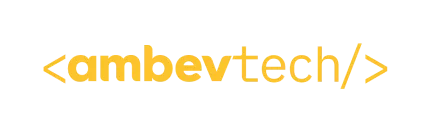
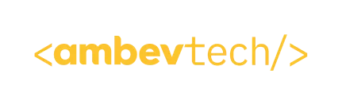

Construo sistemas backend com foco em performance, confiabilidade e manutenibilidade — aplicando Clean Architecture, Clean Code e boas práticas.
Sobre
Perfil orientado a qualidade e resultados, com experiência em monólitos, microsserviços, on-premise e cloud.
O que eu entrego
- Backends escaláveis e bem estruturados
- Arquitetura e padrões (Clean Architecture, MVC)
- Observabilidade e confiabilidade em produção
- Boas práticas: versionamento, CI/CD, quality gates e testes
Como eu trabalho
- Pragmatismo com foco em impacto
- Qualidade como padrão (Clean Code, SOLID)
- Métricas para melhoria contínua (MTTR, CFR, DF, Lead Time)
- Colaboração e liderança técnica
 


Skills
Stack e temas onde eu atuo com mais profundidade.
Experiência
Trajetória profissional com foco em impacto e engenharia de qualidade.
Liderança técnica em backend com foco em escala, confiabilidade e qualidade de código. Atuação próxima do time para transformar requisitos em soluções simples, observáveis e fáceis de manter.
- Definição de arquitetura e evolução de microsserviços (design, boundaries, padrões e boas práticas)
- Qualidade contínua: code review, padrões, automações de CI/CD e qualidade (gates, testes, versionamento)
- Operação e estabilidade: observabilidade (logs/metrics/traces) e resposta a incidentes orientada a dados
- Melhoria contínua com métricas (ex.: MTTR, CFR, Deployment Frequency e Lead Time)
Atuação como senior/tech lead e também em arquitetura, conectando produto e engenharia para entregar serviços consistentes, com pipeline forte e padrões de qualidade bem definidos.
- Desenho e implementação de microsserviços, integração com mensageria e estratégias de resiliência
- Padronização de fluxo de entrega: GitFlow, SemVer, CI/CD, quality gates e testes automatizados
- Infra e deploy: Docker/Kubernetes e integração com ferramentas de cloud e engenharia de plataforma
- Observabilidade aplicada (ex.: dashboards, alertas e rastreabilidade ponta a ponta)
Evolução de soluções corporativas com foco em arquitetura, integração e entrega em squad. Experiência em Java/Spring e migração de necessidades complexas para soluções mais modulares.
- Desenvolvimento e manutenção de serviços em Java/Spring, com integração a bancos e sistemas legados
- Liderança de squad: alinhamento técnico, prioridades, refinamento e entrega com práticas ágeis
- Experiência em cloud (AWS) e suporte à operação de serviços em produção
Desenvolvimento desktop para ERP — uma base que me deu visão forte de domínio, qualidade e performance. Trabalhei em funcionalidades de alto uso, integrações e melhorias contínuas em um produto complexo.
- Construção e evolução de módulos de ERP em Delphi, com foco em usabilidade e consistência de regras
- Otimização de performance (queries, rotinas e pontos críticos) e refatorações para reduzir complexidade
- Integrações e rotinas de dados (importação/exportação), relatórios e automações de processo
- Atendimento a demandas de negócio com clareza técnica, entregas rápidas e manutenção segura
Desenvolvimento em Delphi para sistema de gestão de transportes (TMS), lidando com regras operacionais, fluxo de ponta a ponta e a necessidade de confiabilidade em processos críticos.
- Implementação de features e manutenção de módulos com alto impacto no dia a dia operacional
- Trabalho com dados e integrações, garantindo consistência e rastreabilidade de informações
- Melhorias de performance e qualidade do código para reduzir retrabalho e aumentar estabilidade
Experiência que uniu suporte e desenvolvimento, ampliando minha visão de produto: entender a dor do usuário, diagnosticar rápido e entregar correções/funcionalidades com segurança.
- Suporte técnico e atendimento a clientes, com análise de incidentes e resolução orientada a causa raiz
- Desenvolvimento e manutenção de ERP em Visual FoxPro, incluindo rotinas, telas e relatórios
- Melhorias incrementais para estabilidade e performance, com atenção a dados e consistência
Projetos
Repos em destaque do GitHub.
Ferramenta CLI para stress/load test com métricas e relatório.
Abrir no GitHub →Rate limiting em Go com Redis (estratégias por IP/token).
Abrir no GitHub →Projeto para praticar boundaries e organização orientada a domínio.
Abrir no GitHub →Exercícios e desafios para consolidar fundamentos em Go.
Abrir no GitHub →Contato
O jeito mais direto é via LinkedIn.